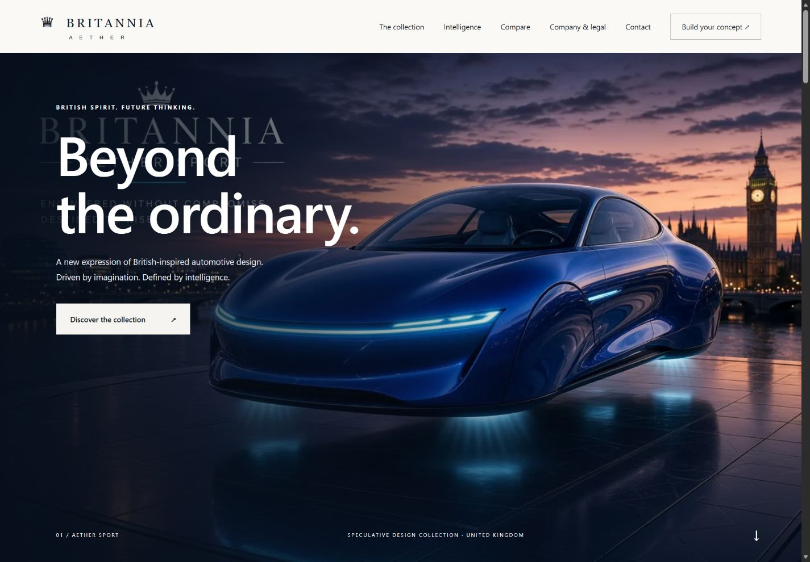
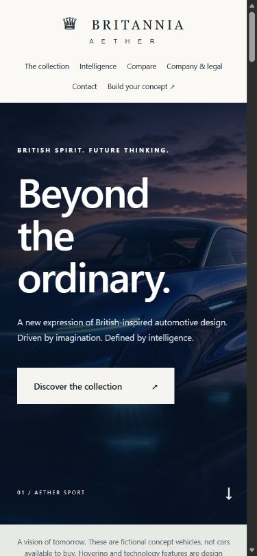

BRITANNIA AETHER / UNIVERSITY PROJECT
Interactive Frontend
Development
A closer look at the concept showroom: its responsive screen views, implementation decisions and all 15 project areas.
Built with HTML, CSS and vanilla JavaScript. Fictional vehicle concepts for a university project; no vehicles, orders or payments are offered.
01 / RESPONSIVE SHOWROOM
Desktop & mobile views
Homepage captures from 27 October 2026, before this documentation link was added. The mobile view uses a narrow browser viewport, not a physical device.




02 / PROJECT DOCUMENTATION
All 15 project areas
Select an area to see its scope and open its documentation on GitHub. All 15 areas are addressed; optional services marked “not applicable” are not implemented features.
01Product requirements
Documented for static showroom.
Read documentation ↗02Design
Documented and implemented in CSS/HTML.
Read documentation ↗03Architecture
Static data flow and delivery documented.
Read documentation ↗04Database/backend
Not applicable; local data model documented.
Read documentation ↗05API
No application API; browser contracts documented.
Read documentation ↗06Agents/coding rules
Coding rules included; runtime agents not applicable.
Read documentation ↗07README
Current entry point and handoff.
Read documentation ↗08Implementation plan
Dependencies, priorities and release steps.
Read documentation ↗09Setup
Preview, validation and development dependencies.
Read documentation ↗10Features
Source mapping and acceptance behavior.
Read documentation ↗11Authentication/security
Public access decision and trust boundaries.
Read documentation ↗12MCP
Not applicable; rationale and future gate.
Read documentation ↗13Integrations
Actual connections and failure boundaries.
Read documentation ↗14Testing/QA
Repeatable suite plus manual coverage.
Read documentation ↗15Debugging
Diagnosis, recovery and report template.
Read documentation ↗